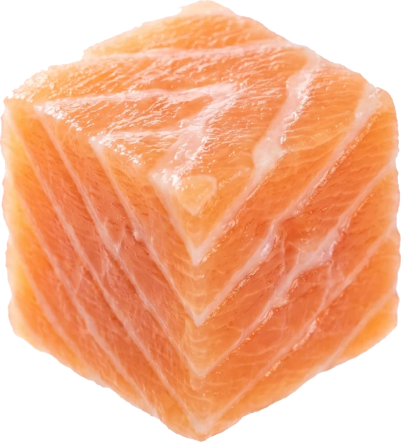
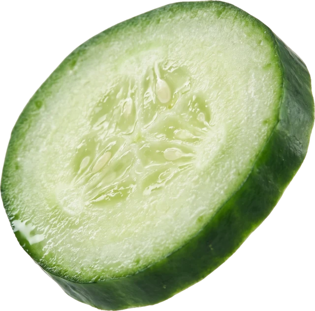
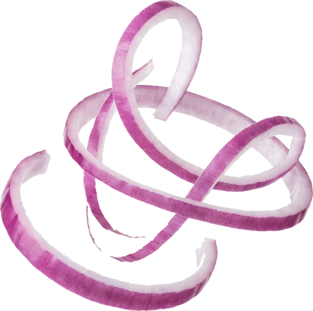
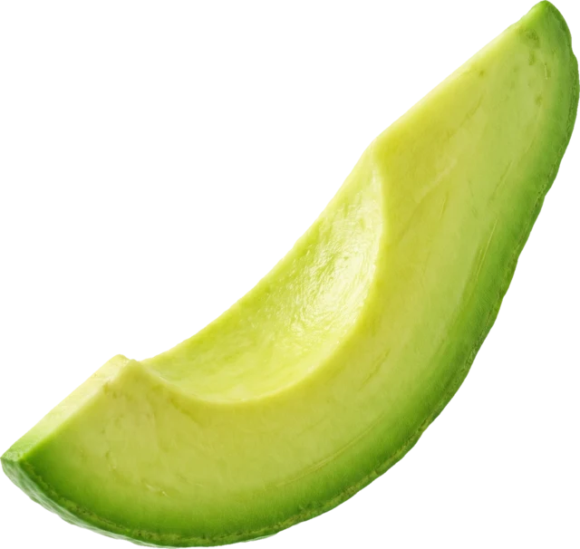
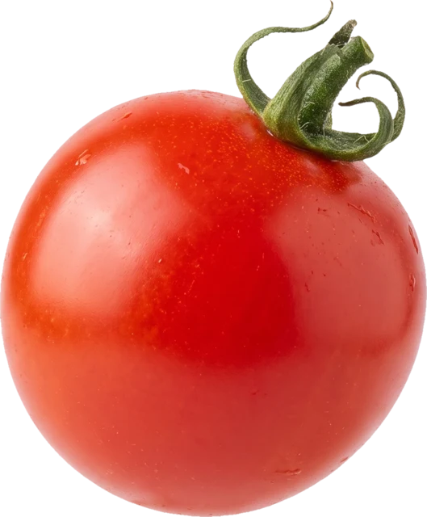
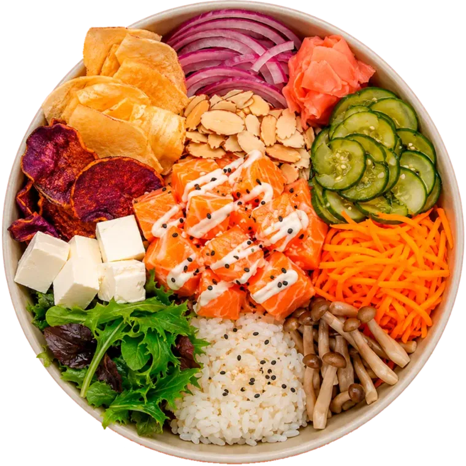
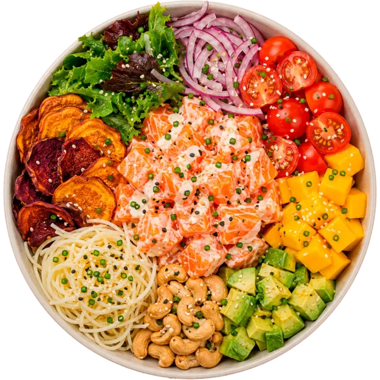
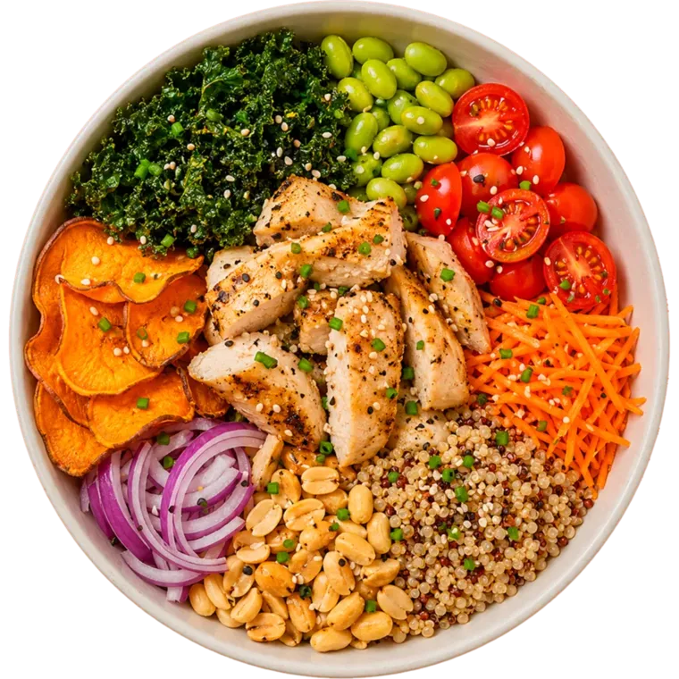
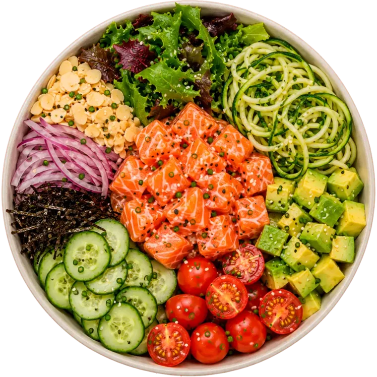

Escolha a base
Arroz japonês, quinoa, espaguete de pupunha ou de abobrinha, mix de folhas.











Repolho roxo, mix de folhas, pepino, tomate cereja, cenoura, couve crispy, palha de nori, ceviche, castanha-de-caju, cebolinha, gergelim, cebola roxa e gengibre.
Montado na hora, todo dia:

Quatro passos e o bowl é seu, do seu jeito.
Arroz japonês, quinoa, espaguete de pupunha ou de abobrinha, mix de folhas.
Salmão fresco, salmão com cream cheese, frango lemon pepper ou ceviche.
Manga, abacate, sunomono, shimeji, edamame, tomate cereja, cebola roxa e mais.
Chips de batata-doce, couve crispy, castanhas, gergelim e molhos da casa.
O Nalu nasceu do apelido de Ana Luiza, sua fundadora, e da palavra havaiana nalu, que significa onda.
A marca carrega essa energia em tudo: pokes frescos, coloridos, tropicais e cheios de sabor. Cada bowl é pensado para trazer leveza, equilíbrio e aquela sensação boa de comida feita com cuidado.
No Nalu, comer bem é simples, gostoso e vibrante.
Ana Luiza
"O melhor poke da cidade, sem discussão. O Waikiki é um absurdo de bom."
Marina C.
"Fresco de verdade. Dá pra sentir que foi montado na hora, todo ingrediente vivo."
Pedro A.
"Peço toda semana. O de ceviche é surreal e a embalagem chega impecável."
Júlia F.